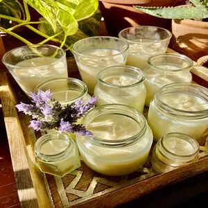

Beneficios
- Son 100% naturales y ecológicas
- Es un producto sustentable ya que es un derivado de una planta, fuente ilimitada, renovable y biodegradable
- No contiene grasa animal, lo que la hace apta para veganos
- Su punto de fusión es de 45 °
- La vela se aprovecha íntegramente y no deja desperdicios en el recipiente
- Duran de dos a tres veces mas que las velas de parafina
- Son solubles en agua. Facil limpieza sobre superficies y telas
- Perfuman los ambientes, incluso sin encenderlas
- Al derretirse la vela se transforma en un aceite natural que puede ser usado para humectar la piel
Aromas Disponibles
- Cafe
- Flores Blancas
- Jazmin
- Lavanda
- Limon
- Magnolia
- Romero
- Naranja
- Patchouly
- Te verde
- Vainilla Blanca
- Citronela
- Cereza

Las velas aromáticas también tienen un significado espiritual según el Feng Shui y cada aroma tiene su propósito en particular. Los aromas generan una gran armonía, tranquilidad y paz a la mente y a los ambientes.